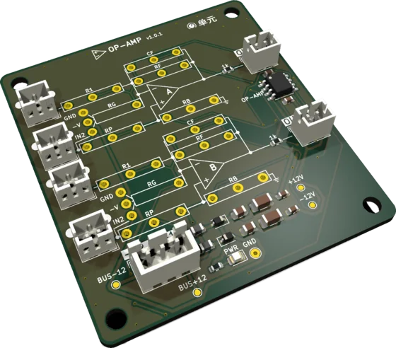

little Eurorack building blocks
synthunits are the little Eurorack building blocks I'm making: a VCO, a filter, a VCA, an envelope, a mixer, and the boards that power and connect them. Each module is one small board. Its jacks, pots and switches connect over short JST leads, so a board can sit in a box on the bench to be probed and changed, or go sideways behind an 8 HP front panel in a case.
The circuits are analog where they can be, drawn once as reusable blocks and built from parts the board house can assemble. Nothing here is finished. The first boards are a test run, and this site follows what happens to them.

Minimodules
One module, one small board: VCO, filter, VCA, envelope, mixer and more.
10 boards
Eurorack modules
Modules on one board behind a front panel: the full VCO and a whole voice.
2 boards
Tools
Op-amp boards, IC breakouts and a test rig: things to learn on and to test with.
10 boards
Power and breakouts
The board that feeds the modules, and a breakout for every panel part.
7 boardsNothing is for sale yet. If you'd like to hear when it is, star somebox/synthunits and follow somebox on GitHub or on Mastodon. Questions and ideas are welcome in the discussions. More on ordering and the project.